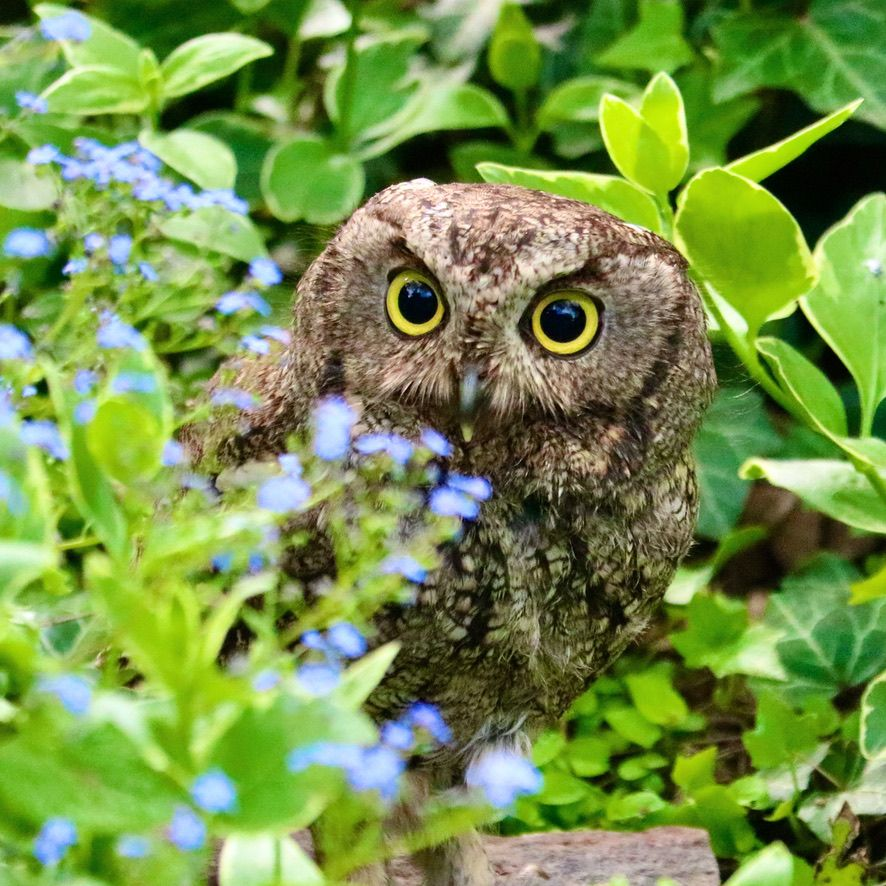
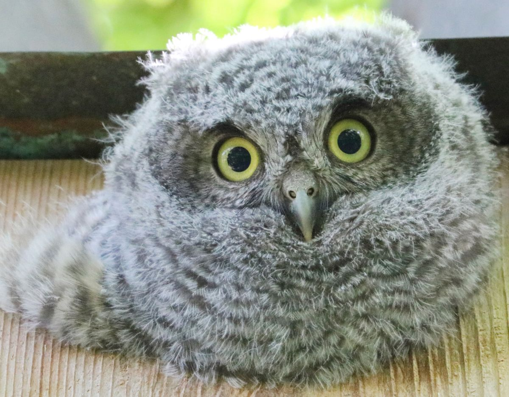
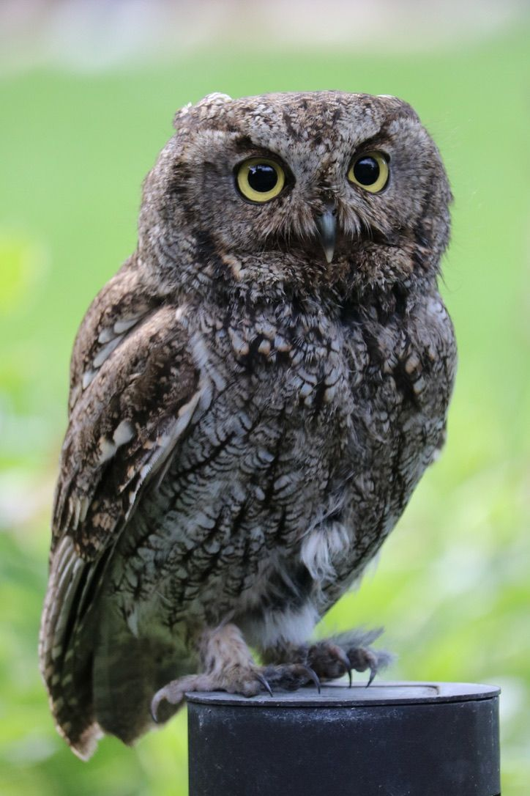
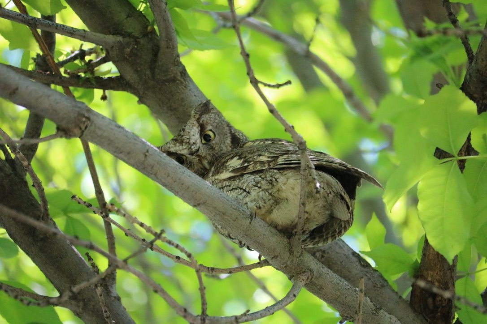
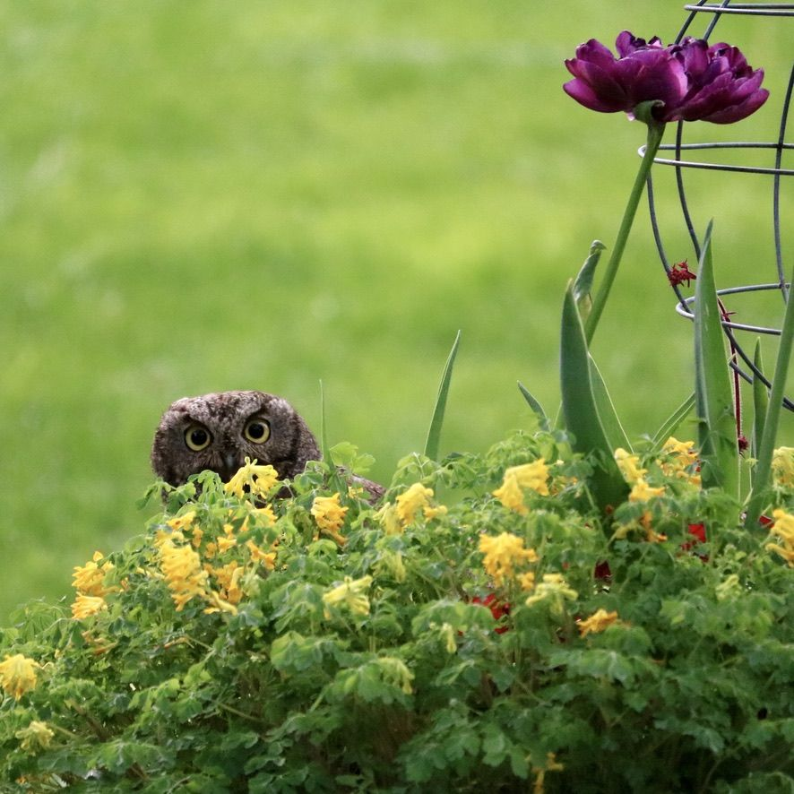
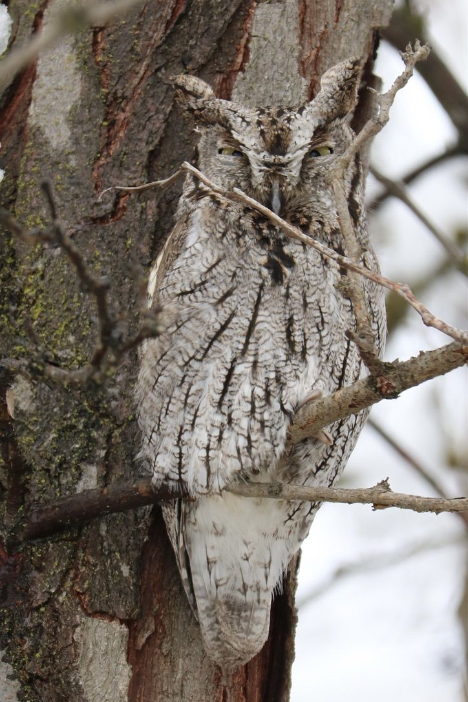
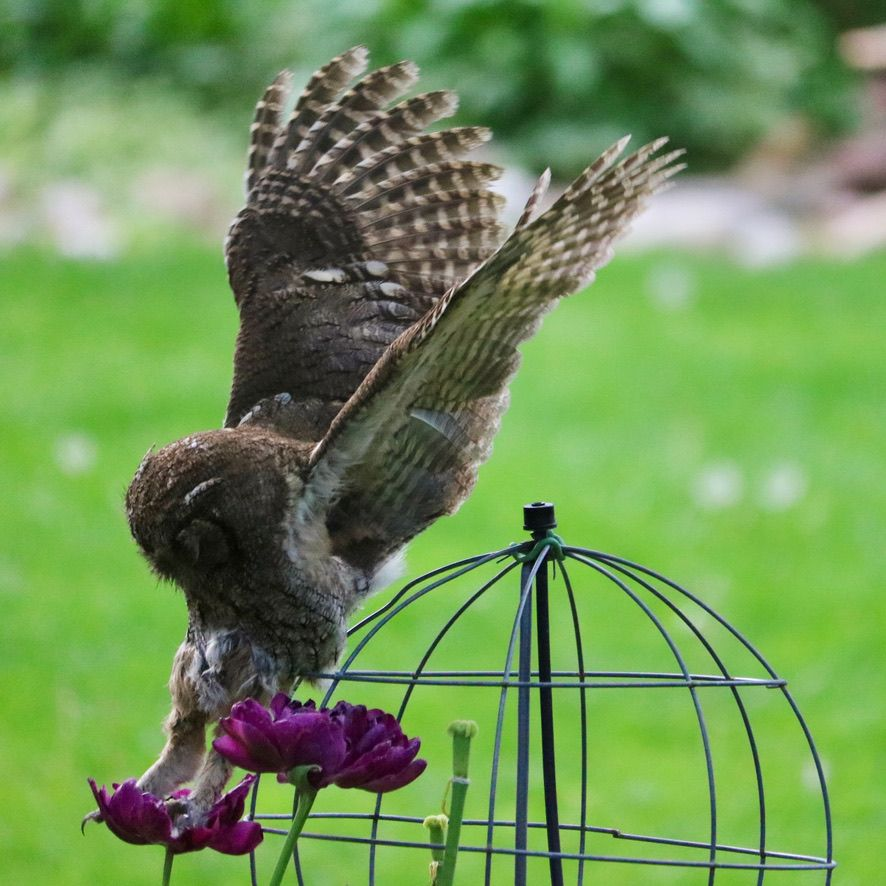
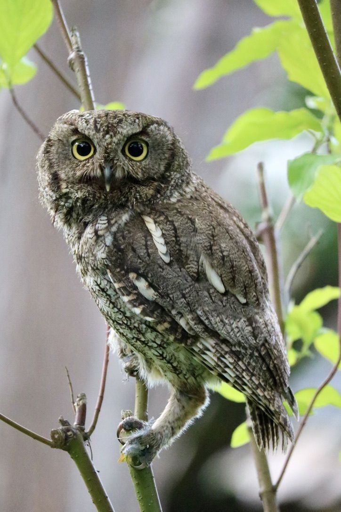
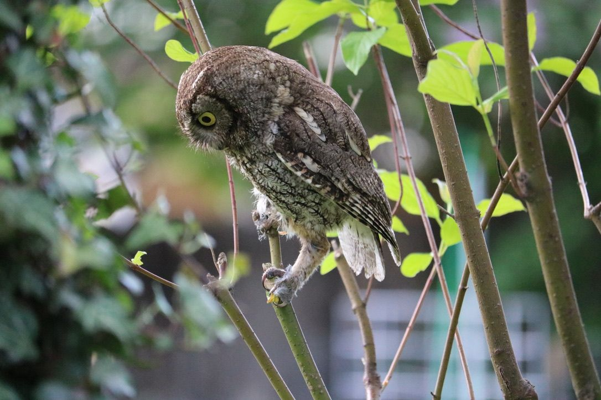
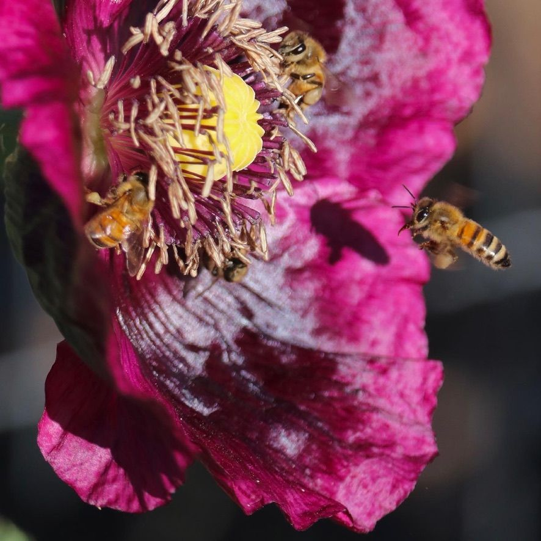

Lindsey Stanton
I design the platforms behind data and AI products, and I do my best work alongside other people.
Ten-plus years in cloud infrastructure, infrastructure as code, and data platform governance. I start with what the business is trying to do, then design systems that make it dependable.

What I bring
Good platforms start with understanding people and goals. The technology follows.
System design
Platforms shaped around how teams actually build and ship, with clear boundaries, a few good defaults, and room to grow without a rewrite.
Solutions for the business
Goals like faster delivery, lower cost, or tighter security turned into concrete options, with the tradeoffs laid out in plain language.
Platform as a product
Internal platforms treated like products: find the users, learn what slows them down, ship small improvements, and keep listening.
Selected work
Verdant
A reference implementation for governing AI agents on cloud data platforms: Terraform-managed Snowflake, an MCP server, GitHub Actions with OIDC, cost governance, and a decision record for each design choice.
terraform-plan-explainer
A command-line tool that reads terraform plan -json output and prints a plain-language summary. It flags destructive changes, resource replacements, and security-sensitive differences so reviewers who aren't Terraform experts can see what matters. Built in Python to run in GitHub Actions pipelines, with optional AI-written summaries. Work in progress.
Governing a cloud data platform
How I approach role-based access, encryption, and cost controls for Snowflake when everything is managed as code, reviewed in pull requests, and repeatable across environments.
Working together
The best designs I've shipped came out of conversations, not solo effort.
I listen before I propose
I ask questions until I understand the problem, who it affects, and what a good outcome looks like. Then I bring options instead of a single answer.
I write things down
Design docs, diagrams, and short decision records let people review ideas on their own time, so quieter voices are heard as well as faster ones.
I give and welcome candid feedback
I critique the work, not the person, and I like having my own designs picked apart early, when changing them is cheap.
I share what I know
Reviews, pairing, and good documentation keep knowledge from living in one person's head, including mine.
Art school, then infrastructure
My degree is in fine arts and art history. It gave me habits I use every week.
Looking closely before deciding
Studying a painting and studying a system diagram both reward patience, and both reveal problems you would miss at a glance.
Defending a choice out loud
Studio critique is daily practice in explaining why you made something and revising it with other people's input. Architecture reviews feel familiar because of it.
Explaining through pictures
I'm comfortable using diagrams and visual structure to make a complicated system understandable to people outside engineering.
Looking atAi Weiwei, Kehinde Wiley, Georgia O'Keeffe, Botticelli, and Frida Kahlo.
Away from the keyboard
I spend a lot of my free time outside with a camera, photographing birds, bees, and wildflowers. Western screech-owls are a favorite subject. They also taught me patience: you see more when you stay still and look.









Field notesWestern screech-owls (Megascops kennicottii), photographed by me in Idaho.
Let's talk
If you're working on a platform, a data product, or a messy system that needs a clear design, I'd like to hear about it.
- Emaillindseymstanton@gmail.com
- LinkedInlinkedin.com/in/lindseystanton
- GitHubgithub.com/StarMoss